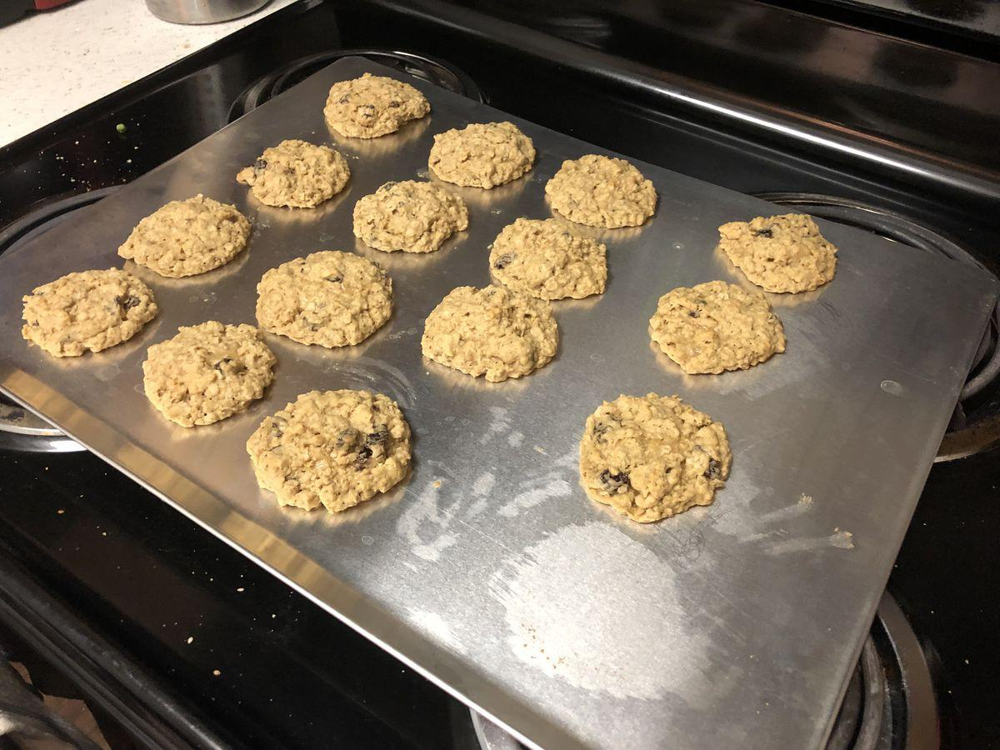

Based on the Joy of Cooking, page 767-768
Personal rating: 2 / 5

1.75 cups flour
3/4 tsp baking soda
3/4 tsp baking powder
1/2 tsp salt
1/2 tsp ground cinnamon
1/2 tsp nutmeg
2 sticks butter, room temperature
1/4 cup sugar
1.5 cups brown sugar, packed
2 eggs
2.5 tsp vanilla
3.5 cups oatmeal
1 cup raisins
Preheat oven to 350F
Whisk part 1. With a wooden spoon combine part 2. Then in the large bowl, combine 1 and 2 then 3
Bake for 12 minutes (or 14 from frozen) on a light colored cooking sheet. When done, let sit for a few minutes then place on a cooling rack